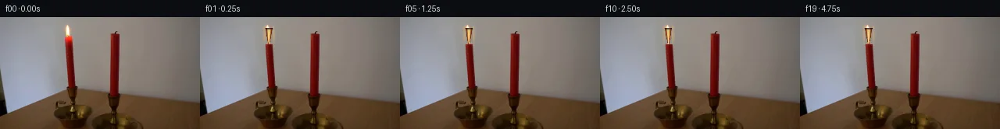

![首帧]()

Round 00
2026-11-05T20:59:25.919678+00:00像素候选变化代码 +392/−0inspection 更新
pixels ac09fab8a8cc40a6 · code 6a97611f30cf26d4
查看本轮 generate.py 真实 diff
--- previous/generate.py
+++ current/generate.py
@@ -0,0 +1,392 @@
+#!/usr/bin/env python3
+"""generate.py — Generate 20-frame candle-flame animation for PixelWorld-Text.
+
+Method: Parametric flame regeneration. Each frame starts from the static scene
+(first_frame.png) and a "clean plate" (estimated wall behind the flame). A new
+flame is drawn each frame using pixel-level arithmetic with shape/color variation
+driven by sine waves and random noise to simulate natural candle flicker.
+
+Frame 00 is an exact copy of first_frame.png.
+Frames 01–19 show the left candle flame flickering.
+The right candle, holders, table, and background are static.
+"""
+
+import numpy as np
+from PIL import Image
+
+# ── constants ────────────────────────────────────────────────────────────────
+H, W = 144, 256
+N_FRAMES = 20
+FPS = 4
+
+# Flame bounding box (from scene analysis)
+FX1, FX2 = 82, 94 # flame x-range inclusive
+FY1, FY2 = 14, 35 # flame y-range inclusive
+
+# ── helpers ──────────────────────────────────────────────────────────────────
+
+def load_frame0():
+ """Load first_frame.png as uint8 RGB array."""
+ img = Image.open("first_frame.png")
+ arr = np.array(img)
+ assert arr.shape == (H, W, 3) and arr.dtype == np.uint8
+ return arr.copy()
+
+
+def build_clean_plate(frame0):
+ """Replace the flame region with estimated background wall colors.
+
+ Uses bilinear interpolation from pixels just left and right of the flame
+ region to estimate what the wall looks like behind the flame.
+ """
+ clean = frame0.copy()
+
+ # Sample left-edge and right-edge columns for each y in flame region
+ left_x = FX1 - 1 # x=81
+ right_x = FX2 # x=94
+
+ for y in range(FY1, FY2):
+ left_color = frame0[y, left_x].astype(np.float32)
+ right_color = frame0[y, right_x].astype(np.float32)
+ for x in range(FX1, FX2):
+ t = (x - FX1) / (FX2 - 1 - FX1) # 0 at left, 1 at right
+ color = (1 - t) * left_color + t * right_color
+ clean[y, x] = np.clip(color, 0, 255).astype(np.uint8)
+
+ return clean
+
+
+def flame_shape(y_norm, wobble, params):
+ """Return (half_width, center_x) for a normalized y position (0=bottom, 1=top).
+
+ y_norm: 0 at flame base, 1 at flame tip
+ wobble: horizontal offset factor for this frame
+ params: dict with shape parameters
+ """
+ # Teardrop-like profile: widest near bottom, tapering to tip
+ hw_base = params['hw_base'] # half-width at base
+ hw_mid = params['hw_mid'] # half-width at mid-height
+ hw_tip = params['hw_tip'] # half-width at tip
+
+ # Composite shape using two quadratic segments
+ if y_norm < params['mid_point']:
+ # Bottom to mid: widen then start narrowing
+ t = y_norm / params['mid_point']
+ hw = hw_base + (hw_mid - hw_base) * (t ** 0.6)
+ else:
+ # Mid to tip: narrow to tip
+ t = (y_norm - params['mid_point']) / (1.0 - params['mid_point'])
+ hw = hw_mid + (hw_tip - hw_mid) * (t ** 1.2)
+
+ # Center wobble (horizontal shift)
+ center = params['center_base'] + wobble * (1.0 - y_norm * 0.5)
+ return hw, center
+
+
+def flame_color(y_norm, x_dist, params):
+ """Return (r, g, b) uint8 for a flame pixel.
… diff truncated; 305 more lines …